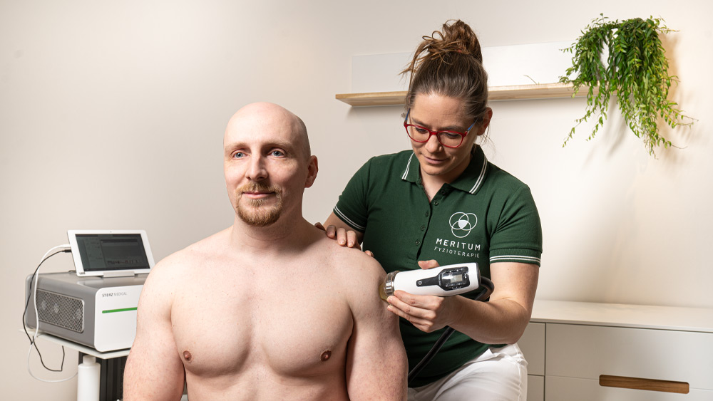

Zrychlujeme proces hojení
Máte akutní sportovní zranění? Vyvrkli jste si kotník? Jste čerstvě po operačním zákroku nebo Vás operace čeká? Čím dřív k nám přijdete, tím rychleji budete fit! Naše pracoviště je vybaveno nejmodernějšími přístroji pro efektivní a rychlou léčbu úrazů a pooperačních stavů.
Podpora hojení
V naší ordinaci řešíme jak stavy po úrazu, tak stavy po operacích. Přicházejí k nám pacienti po sportovním zranění, jako jsou natažený či natržený sval, zvrknutý nebo pohmožděný kloub, rozsáhlý hematom (modřina), naražená/zlomená žebra a podobně. Dále ošetřujeme pacienty například po autonehodách (nejčastěji whiplash syndrom) a jiných úrazech jako například zlomeniny či zhmoždění v důsledku pádu atd. Důležité je brzké ošetření, aby došlo co nejdříve k úlevě od bolesti a nastartování optimálních hojících procesů. K tomuto využíváme vysokovýkonný MLS Laser nebo Fokusovanou rázovou vlnu a jako důležitou podpůrnou část celého procesu také lymfodrenáž. Metodu léčby vždy volíme individuálně na základě potíží pacienta a výsledku vyšetření.
Toto platí i pro pooperační stavy, kde se zaměřujeme také na terapii jizvy a otoku.
Terapie jizvy
Pro terapii jizvy je nejefektivnější terapií vysokovýkonný MLS Laser. Díky jeho významným biostimulačním účinkům dochází k rychlému fyziologickému zahojení jizvy v celé její hloubce. Tím předcházíme komplikacím, jako jsou srůsty a adheze měkkých tkání. V naší ordinaci často léčíme pacienty s významnými obtížemi pohybového aparátu způsobenými srůsty nebo adhezemi měkkých tkání způsobené špatným hojením. Jelikož víme, jak je léčba těchto chronických stavů náročná, děláme vše proto, abychom těmto stavům primárně předcházeli. Proto je potřeba přijít po chirurgickém zákroku co nejdříve, optimálně ve fázi, kdy ještě nejsou vyndané stehy. Pro správné hojení jizvy jsou důležité již první hodiny po zákroku. Proto neváhejte s rezervací termínu. Zároveň pokud Vás čeká operační zákrok, doporučujeme již předem naplánovat efektivní léčbu jizvy. Důkladné ošetření vyžadují i stavy po laparoskopické operaci, při kterých jsou jizvy malé a na první pohled nenápadné, avšak hloubka jizvy a průnik měkkými tkáněmi je často větší než u otevřeně vedené operace.
Laseroterapie je využívaná nejčastěji po zákrocích, jako jsou:
- Císařský řez
- Hysterectomie
- Laparoskopické operace (žlučník, slepé střevo)
- Operace slepého střeva a další břišní operace (kýla, abdominoplastika...)
- Totální kloubní endoprotézy
- Karpální tunel
- Operace vbočeného palce
- Artroskopie
- Operace Schwannomu
- Operace ruptury Achillovy šlachy
- Operace v oblasti páteře (výhřez ploténky, stabilizace obratlů...)
- A všechny ostatní chirurgické výkony
Terapie otoku
Výsledek ošetření otoku vysokovýkonným MLS laserem je efekt viditelný velmi rychle, a to v řádu hodin. Díky jeho výraznému antiedematóznímu efektu dochází k urychlení hojení nejen poúrazových stavů. Efektivní podpora lymfatického systému, je zásadní pro zlepšení metabolických pochodů a nedochází tak k pomalému hojení, způsobeném stagnací otoku. Díky tomu se nám daří rychleji obnovit kloubní pohyb, eliminovat bolest při pohybu a zajistit správné prohojení zraněné tkáně. V naší praxi se výborně osvědčila kombinace laseroterapie a lymfodrenáže (ať už manuální nebo přístrojové). Díky tomu vidíme u našich pacientů rychlé hojení úrazů a významné zkrácení doby uzdravení. Zároveň díky podpoře přirozených hojících procesů lidského těla předcházíme zdlouhavé a nekvalitní rekonvalescenci, která může mít za následky další chronické potíže.